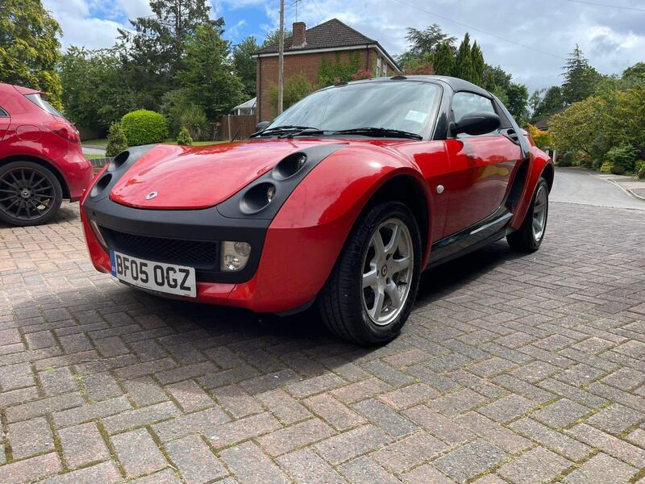

← All 50Dropped 2026-10-15

Dropped from the 50
2005 Smart Roadster 0.7
Replaced by better-value new finds (value score 5,544, ranked #57 on 15 Oct); the ad is still live.
£2,900136,565 miles · Gerrards Cross · 27 mi from GU7
View on AutoTrader ↗ See the current 50 →